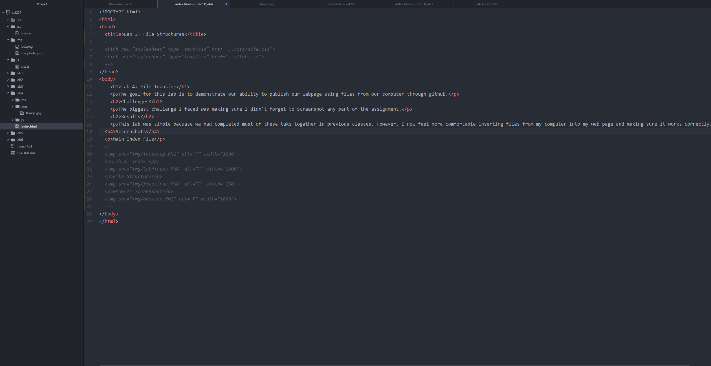
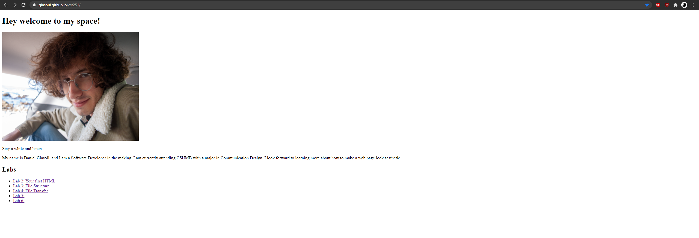
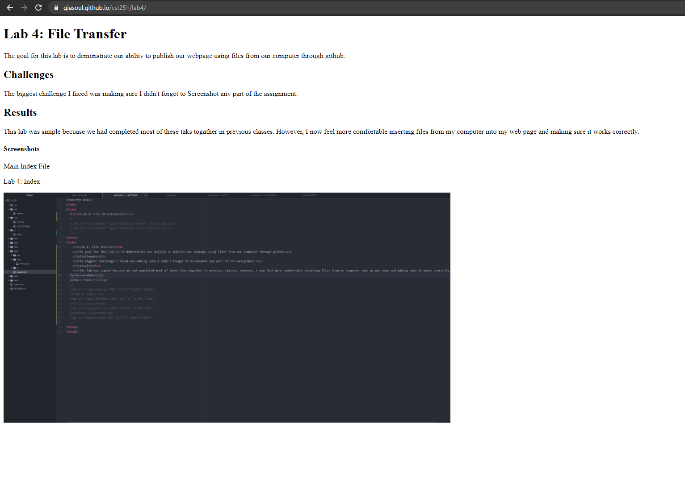

The goal for this lab is to demonstrate our ability to publish our webpage using files from our computer through github.
The biggest challenge I faced was making sure I didn't forget to Screenshot any part of the assignment.
This lab was simple becuase we had completed most of these taks togather in previous classes. However, I now feel more comfortable inserting files from my computer into my web page and making sure it works correctly.
Lab 4: Index
Mainpage Screenshot
Browser Screenshot Lab4
